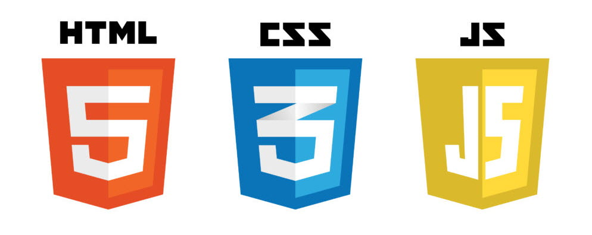

프로그래밍 언어
HTML
HTML(HyperText Markup Languege)은 웹 페이지를 위한 지배적인 마크업 언어다. HTML은 제목, 단락, 목록 등과 같은 본문을 위한 구조적 의미를 나타내는 것뿐만 아니라 링크, 인용과 그 밖의 항목으로 구조적 문서를 만들 수 있는 방법을 제공한다. 그리고 이미지와 객체를 내장하고 대화형 양식을 생성하는 데 사용될 수 있다.
HTML은 웹 페이지 콘텐츠 안의 꺾쇠 괄호에 둘러싸인 "태그"로 되어있는 HTML 요소 형태로 작성한다. HTML은 웹 브라우저와 같은 HTML 처리 장치의 행동에 영향을 주는 JavaScript와 본문과 그 밖의 항목의 외관과 배치를 정의하는 CSS 같은 스크립트를 포함하거나 불러올 수 있다.
▲HTML과 CSS와 JavaScript
HTML과 CSS 표준의 공동 책임자인 W3C는 명확하고 표상적인 마크업을 위하여 CSS의 사용을 권장한다